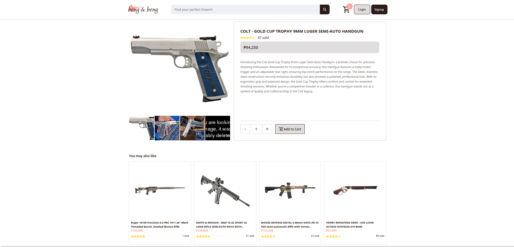
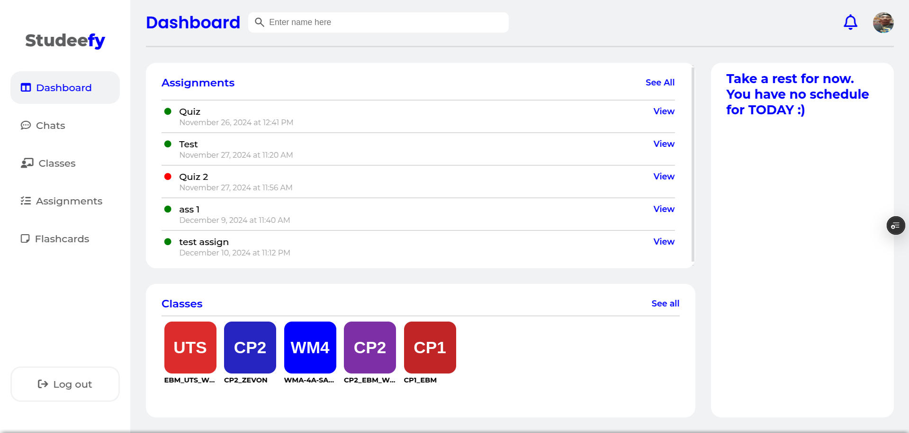
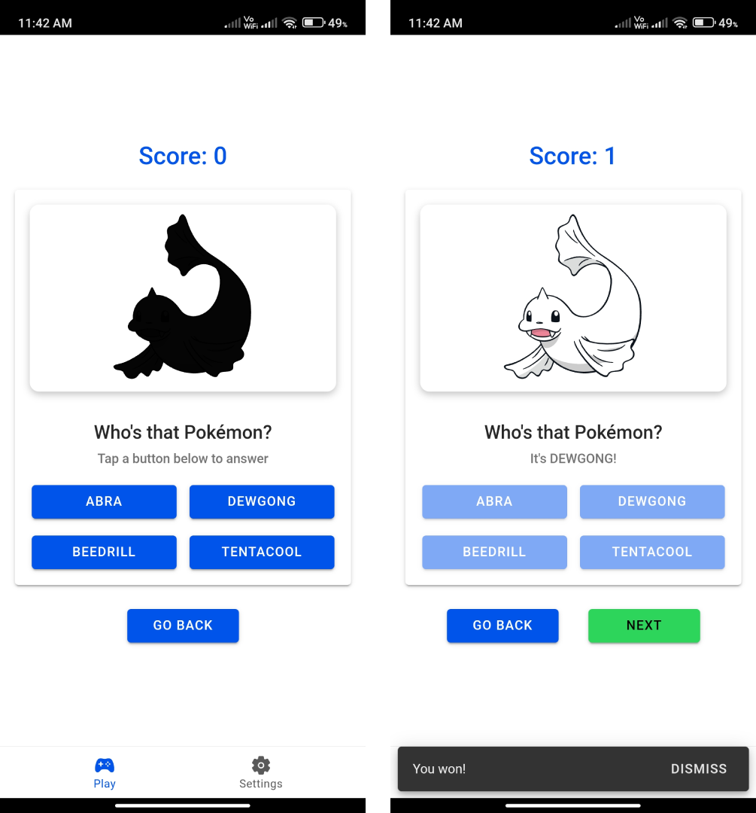
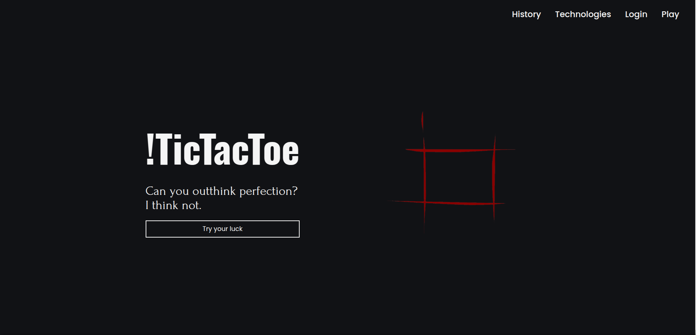
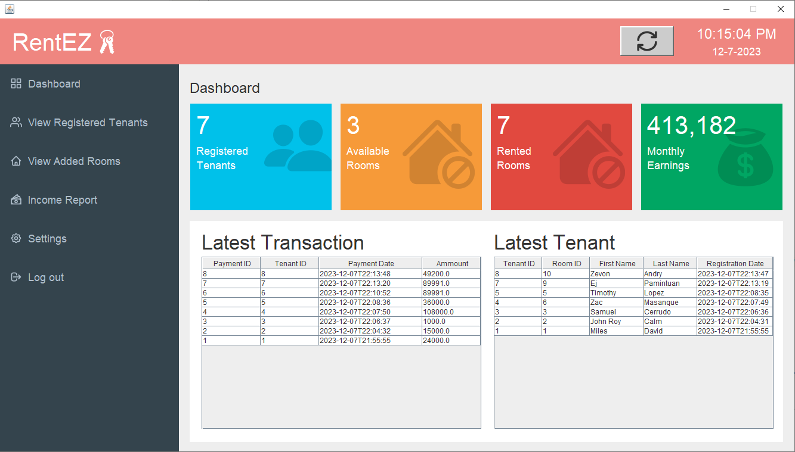

Edwin Bañago's Webpage
Hello! My name is Edwin. I'm from Tarlac, Philippines.
I'm a recent graduate of Tarlac State University, where I earned a Bachelor of Science in Information Technology,
graduating as Magna Cum Laude.
Through my 4-year stay at University, I was able to learn and explore several skills particularly in Programming focusing on Web and App development.
I aspire simplicity and cleanliness in my personal work but I am also committed in understanding different perspectives and exploring new skills!
As a Student, I really enjoyed working with Web but I am now looking for opportunities to grow as a Professional.
Projects

Beng & Beng is the highlight of my Internship at Armada Logics, Inc. during my senior year at the University. This is a group project involving 3 of my co-interns.
This is an E-commerce site focused on Front-end development. We applied all the techniques and skills we learned throughout out Web Fundamentals Course and ended up developing this project
I take pride in this project as I lead our group's development and focused on designing and scripting of the website.

Studeefy is a Learning Management System (lms) that I built for our capstone project at university. Unlike any other
lms, Studeefy has an ai-powered automated features such as automated flashcards and quiz creation.
The automated feature works by the user uploading a document preferebly containing educational content. The text content
of the document are then extracted and passed to OpenAI's GPT API and with the correct instructions given, it will pass
back a formatted content that can be used to create flashcards and quizzes!!
Aside from automation, studeefy also pack very similar features to MS teams as it was the main insipiration of it.
Virtual classes, quizzes, assignments, messaging, and file uploads! all of these happening in Studeefy.
this is definitely the best one i have built yet but i am confident i can still build a better one.

up to this date i still have not thought about giving it a proper name so i guess it will still be called the pokemon
guessing game. this one is definitely the most fun i have built. its an android app but built using web technologies
such as react and ionic.
How does it work? well if you have read the title then you already know. btw, this one uses PokeAPI which is great for
getting information about Pokemons. additionally, it can store date such as scores and users using local storage.

why is there a "!" in the name? well if you are a fellow programmer then you know that "!" means "not", and this
tictactoe is NOT your ordinary tictactoe!! ;p
this project is my first dive with javascript. it was a nightmare as i had to finish it in the weekened while needing to
learn about min-max-algorithm applied with javascript.
Yup, this one uses min-max-algorithm (thanks to the guy from freecodecamp who provided the algorithm). this means that
you won't be fighting against fellow fiddle humans, but with an unbeatable algorithm.
forget about winning on this one. be grateful if you can even get a draw

before getting my hands dirty with web development, i first had experience with developing desktop gui using java swing.
this is a system i built for our OOP class at university.
not much to say about this one except for some reason, i don't have a proper screenshot this project. this image is from
the moment i finished developing it. the bilt-in date and time feature is the proof as i remember finishing this project
from 9am to 4am.
also, have i not mentioned yet that it also connects to mysql? cool stuff, it was magical actually.